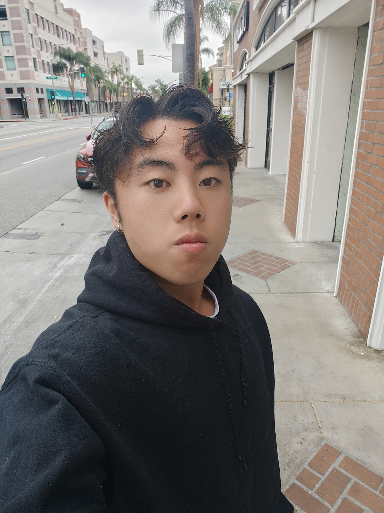

Interactive Furniture Layout Tool
React-based room layout tool with drag-and-drop, multi-floor support, and dynamic inventory. Built for a CS capstone.

Software engineer
I'm a recent USC CS grad (May 2025) from Fremont, CA. I care about building things that are useful and interesting — the kind of stuff that actually makes a difference or just makes you think.
Outside of code, a big part of who I am is a cappella — I was part of a group at USC and it's stayed with me. I'm also an avid weightlifter and currently going through a personal health journey. So: engineer by day, singer and lifter by… also day, just different parts of it.
Here are some cool things I've worked on. Not a formal project list — more like "here's what I've been up to."
React-based room layout tool with drag-and-drop, multi-floor support, and dynamic inventory. Built for a CS capstone.
Android app that simulates course registration: add/drop classes, chat with classmates, and manage your profile.
Built a functional Unity game with teammates in 12 hours at UC Riverside's CutieHack hackathon.
Raspberry Pi + PiCamera robot with 2D spatial localization, QR code commands, and AR-style display. Presented at SHINE.
C++, Python, JavaScript, HTML/CSS, C, C#, Swift, SQL · React, Grafana · Xcode, Unity